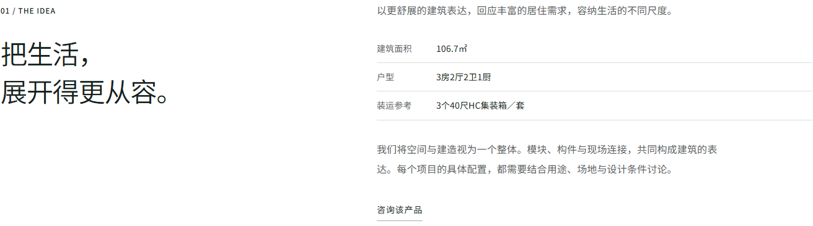
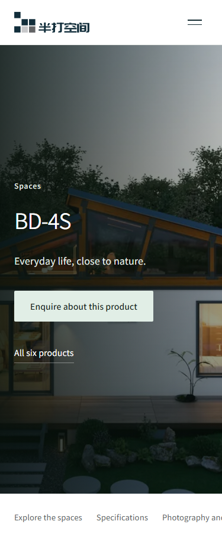
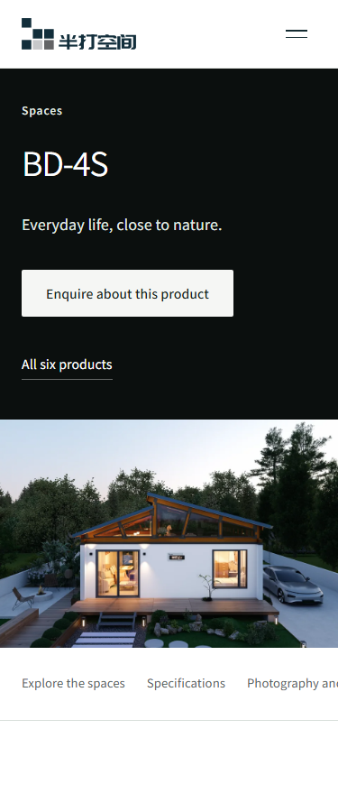
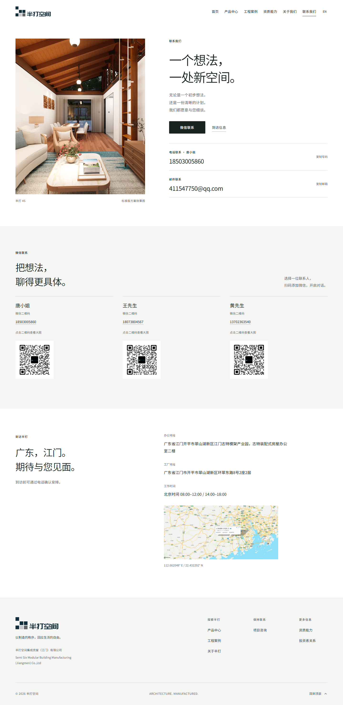

本轮已识别的视觉问题已处理并复验；可作为甲方视觉确认版本，不代表甲方已签收。




48项单元测试、类型/代码/构建、46项素材和18项补充资料检查通过。60项产品显示、10项联系结构和18项联系布局检查在本地及公网分别通过；联系页两处各4组自动无障碍检查通过。10组Logo/导航/阅图状态与11组交互回归通过。
全站297项首轮296项通过；中文案例320px出现图片加载异常。中英文案例本地18项及公网18项复测通过，未修改图片断言；保留首次失败记录。最终公网33页HTML与部署包一致。
构建提交：508bde6 · 详细验收记录